OBJETIVO Y ALCANCE
El presente manual sirve como referente para que el Coordinador Académico, pueda llevar a cabo su labor dentro del aula y con los alumnos; a través de los diferentes apartados.
La forma de desempeño y la atención brindada por parte de un Coordinador Académico influyen en la retención del alumnado.
OBJETIVO DE LA GUÍA
Conocer las herramientas disponibles en el módulo de Aula Digital, así como su aplicación dentro del aula.
1.- Ingresa al sistema y selecciona la opción Usuarios.
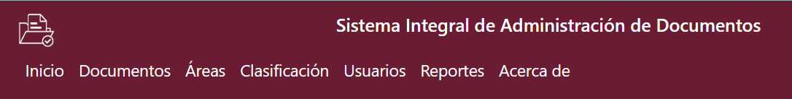
2.- Da clic en la opción Nuevo Usuario.
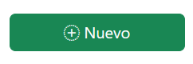
3.- Llena los campos requeridos y se muestran cuales deben ser obligatorios.
CAMPOS A COMPLETAR:
[1]Nombre:Puede ser con mayúsculas o minúsculas
[2]Apellido Paterno:
[3]Apellido materno:
[4]Teléfono de oficina:Depende el caso de donde se ubicara.
[5]Teléfono celular: Uno que este verificado
[6]Correo electronico: Proporcione el institucional
[7]Contraseña:No se comparte a
[8]Rol: Se desglosan en Archivista y Unidad Central de Correspondencia
[9]Área: Se desglosan en Secretaria, Departamentos y Dirección.
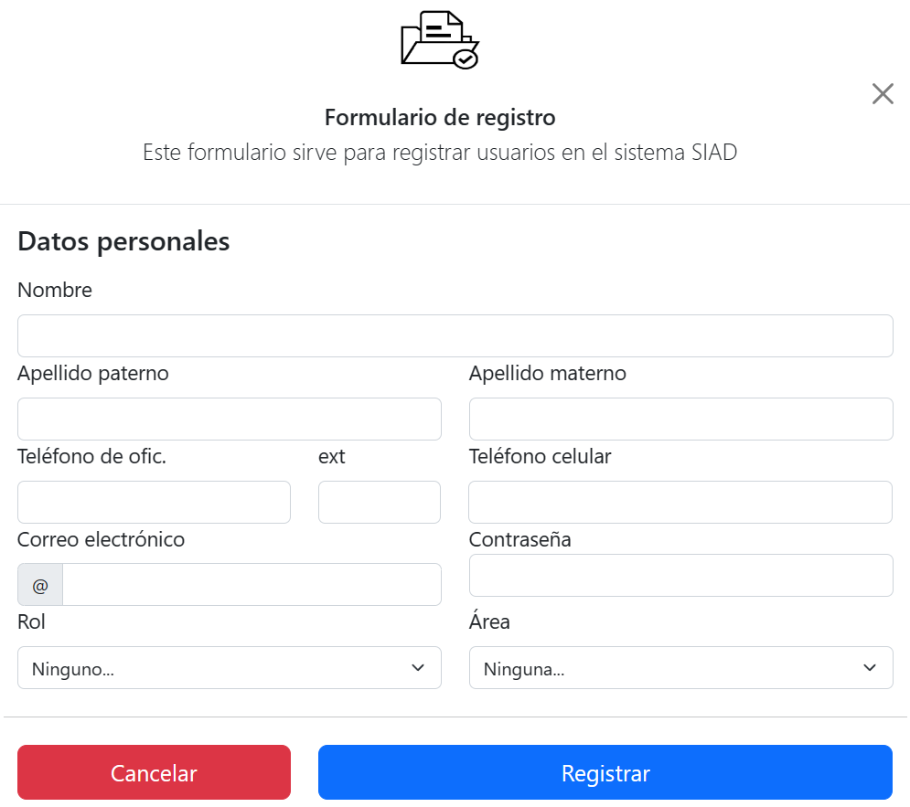
1.- Ingresa al menú y selecciona la opción Documentos
2.- Vista principal del apartado.
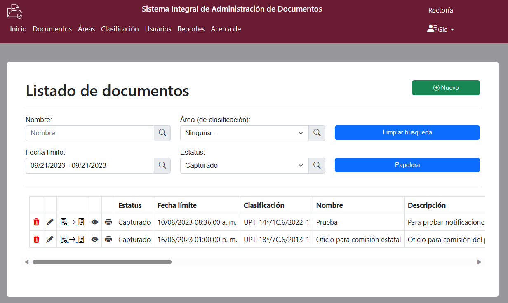
3.- Da clic en la opción Nuevo.
4.- Llena los campos requeridos y se muestran cuales deben ser obligatorios.
CAMPOS A COMPLETAR:
[1]Nombre:Al que se le dara el documento
[2]Descripción: Agregar algo breve o referencias importantes.
[3]Fecha limite: Esta es una fecha tentativa.
[4]Archivo: Apartado para subir el correspondiente.
[5]Rol: Se desglosan en Archivista y Unidad Central de Correspondencia
[6]Área: Se desglosan en Secretaria, Departamentos y Dirección.
[7]Secciòn: Cada una de las divisiones del Fondo, basada en las atribuciones de cada
Unidad Administrativa.
[8]Serie:Es la división de una sección que corresponde al conjunto de
documentos.
[9]Subserie:División de una sección que corresponde al conjunto de
documentos.
[9]Año:Depende del documento que se requiera puede ser de años porteriores.
[9]Folio:Numero para identificar, esta la opciòn de aitomatico.
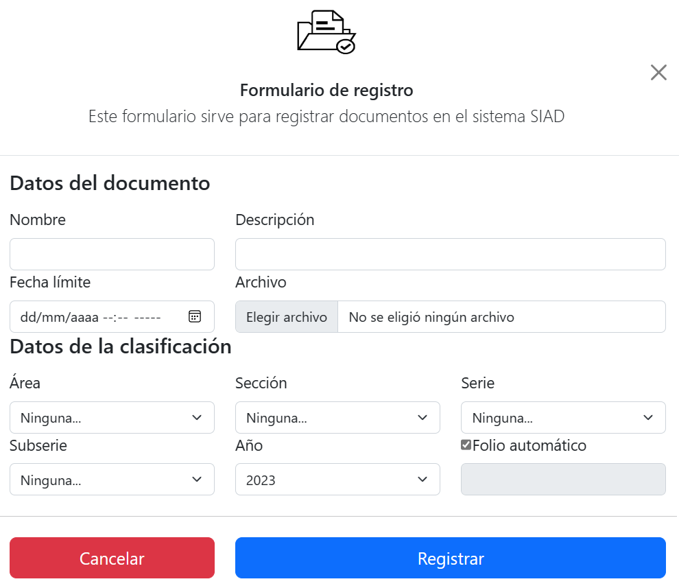
Apartados de Modificaciones.
1.- Ingresa al sistema y selecciona icono Cesto Eliminar. Quitar el documento deseado
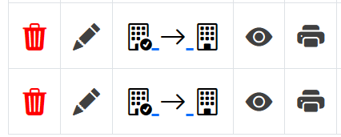
2.- Ingresa al sistema y selecciona icono Lapiz Editar. Hacer cambios sobre alguna información proporcionada
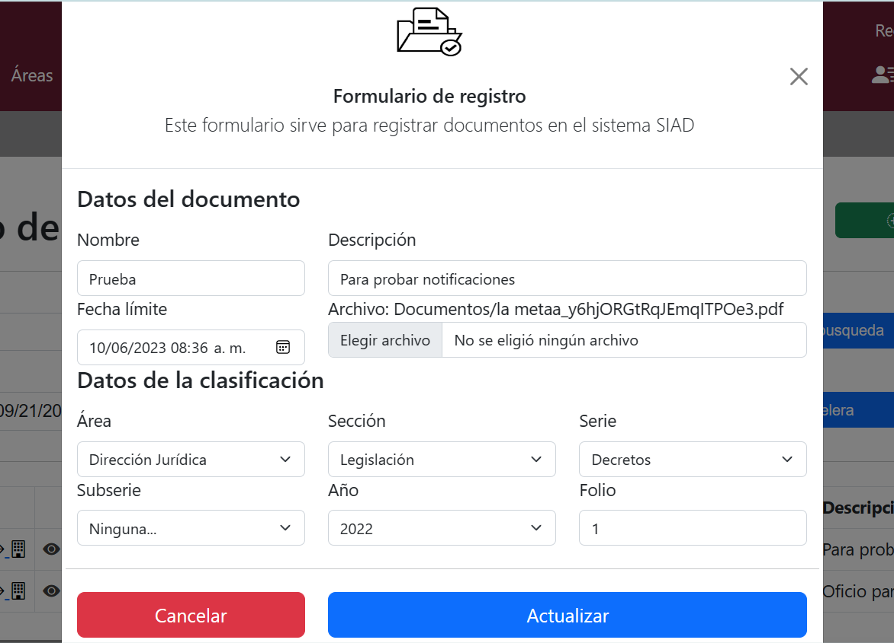
3.- Ingresa al sistema y selecciona icono Flechas Redirigir. Poder redigir el documento a otra area
4.- Ingresa al sistema y selecciona icono Ojo Visualizaciòn. Poder visualizar el documento en otra pestaña
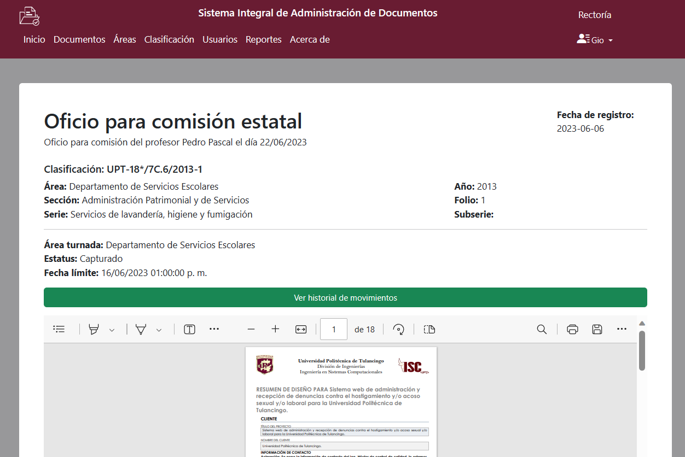
5.- Ingresa al sistema y selecciona icono Impresora Imprimir. Mandar directo a la ventana de imprimir documento
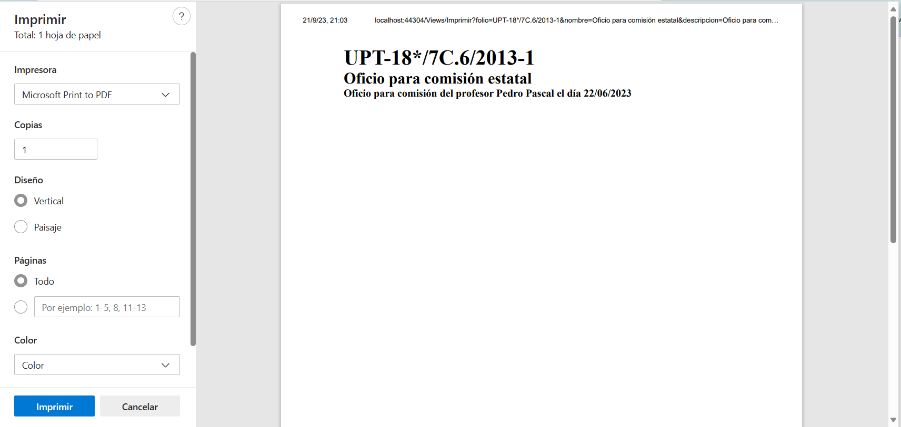
1.- Ingresa al menú y selecciona la opción Àreas
2.- Vista principal del apartado.

3.- Da clic en la opción Nuevo.
4.- Llena los campos requeridos y se muestran cuales deben ser obligatorios.
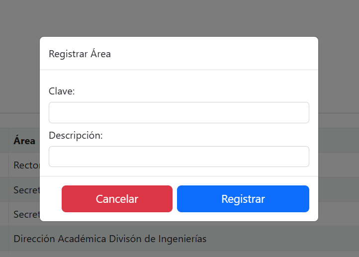
5.- Si requieres hacer modificaciones selecciona icono Lapiz Editar. sobre alguna información proporcionada anteriormente.
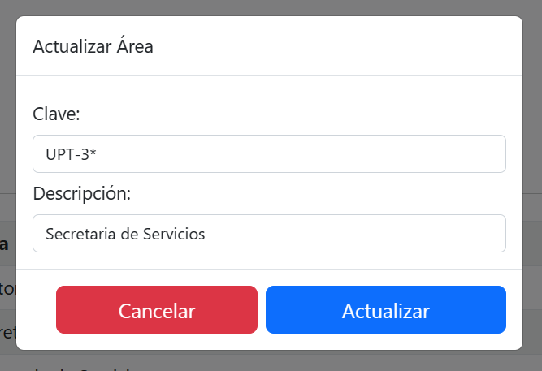
6.- Necesitas eliminar alguna opciòn selecciona icono Cesto Eliminar. Quitar la àrea que esta en la tabla y te mandara una alerta.
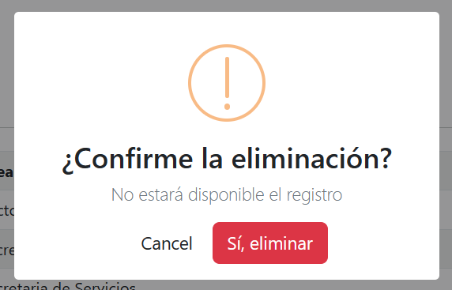
1.- Ingresa al menú y selecciona la opción Clasificaciòn se despliegan 3 opciones
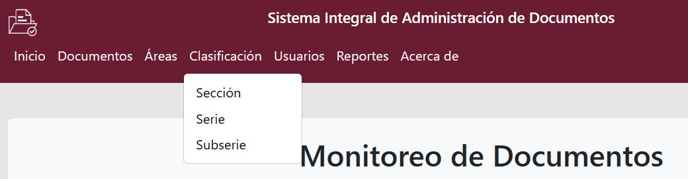
2.- Vista principal del apartado Secciòn.
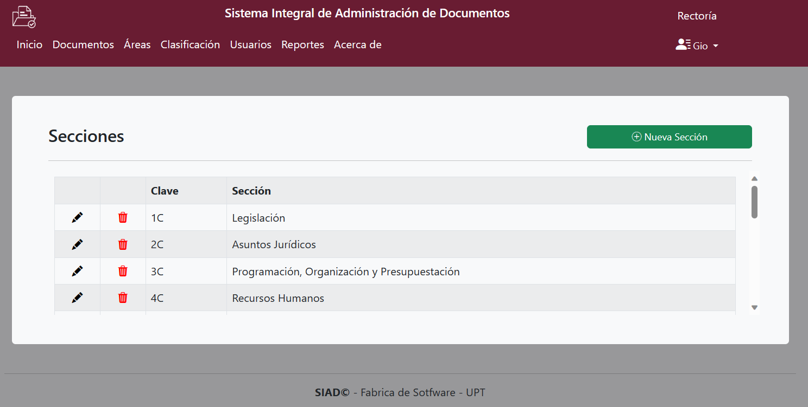
3.- Da clic en la opción Nuevo.
4.- Llena los campos requeridos y se muestran cuales deben ser obligatorios.
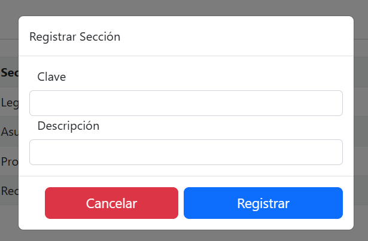
5.- Si requieres hacer modificaciones selecciona icono Lapiz Editar. sobre alguna información proporcionada anteriormente.
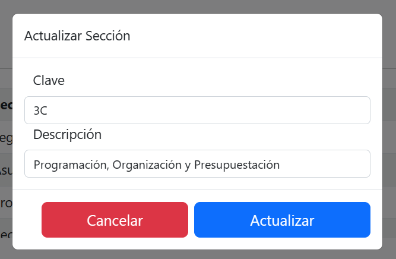
6.- Necesitas eliminar alguna opciòn selecciona icono Cesto Eliminar. Quitar la àrea que esta en la tabla y te mandara una alerta.
12.- Vista principal del apartado Subserie.
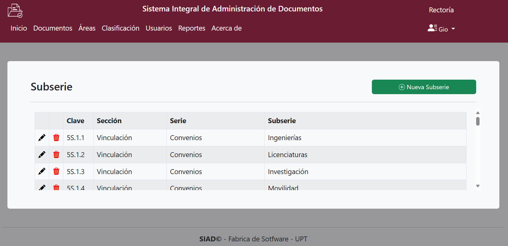
13.- Da clic en la opción Nuevo.
14.- Llena los campos requeridos y se muestran cuales deben ser obligatorios.
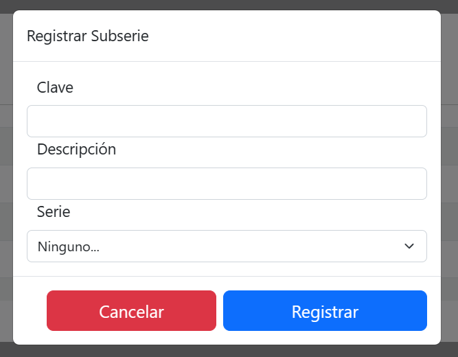
15.- Si requieres hacer modificaciones selecciona icono Lapiz Editar. sobre alguna información proporcionada anteriormente.
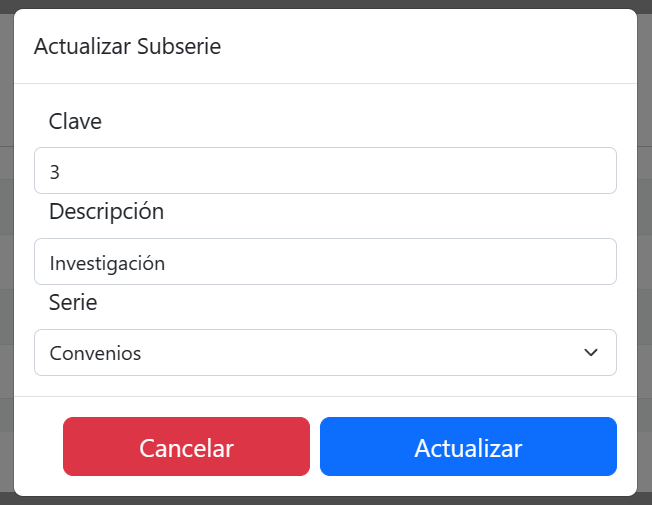
16.- Necesitas eliminar alguna opciòn selecciona icono Cesto Eliminar. Quitar la àrea que esta en la tabla y te mandara una alerta.
1.- Da clic en el Menú Configuración, opción Instalaciones.

- Se mostrará una ventana con un listado de las instalaciones dadas de alta. Para agregar una Nueva instalación, da clic en el botón Nuevo registro.

- Selecciona y llena los campos necesarios para identificar la nueva instalación y da clic en Guardar para finalizar el registro.

2.- Da clic en el Menú Organización, opción Espacios.

- Se mostrará una lista de los espacios dados de alta; en la parte superior derecha, visualizarás dos botones.

- El primer botón Tipos de espacios, mostrará la descripción de cada uno.

- El botón Nuevo registro, permitirá dar de alta un nuevo espacio.

- Selecciona los datos y llena los campos para dar de alta el nuevo espacio, para finalizar da clic en el botón Guardar.
- Dentro del módulo de Coordinación académica, dé clic en el menú Calificaciones y Asistencias y de clic en la opción Exámenes por competencias.

- Seleccione el cuatrimestre y el programa educativo. Puede buscar el docente desde la barra de búsqueda disponible.

- Se mostrarán los aplicadores y asignaturas registradas en el periodo seleccionado. Para poder visualizar todas las propuestas de los alumnos, damos clic en el botón Listado de propuestas.


- Al visualizar las propuestas de los alumnos, se mostrará el listado del periodo activo. Este listado nos mostrará el estatus de cada solicitud realizada por los alumnos pendientes de autorización.

- Para poder registrar un nuevo aplicador de examen por competencia, damos clic en el botón Nuevo registro.

- Al realizar un nuevo registro nos pedirá la siguiente información:
- Periodo.
- Programa Educativo.
- Docente.
- Asignatura.
- Estatus.

- Al momento de realizar el registro, se mostrará el listado de aplicadores, el cual indicará el periodo, el aplicador, la asignatura, el no. de alumno que se han autorizado o propuestos y el estatus.

- El registro se podrá Editar o Eliminar, siempre y cuando no se haya autorizado un alumno o propuesto un alumno.
- Para poder autorizar las solicitudes de los alumnos de una asignatura, damos clic en el botón Seguimiento de alumnos.

- Al dar clic en Seguimiento de alumnos, tendremos que indicar que proceso se va a
realizar.
- Autorizar exámenes por competencias
- No Autorizar exámenes por competencias
- Si seleccionamos Autorizar, nos listará a los alumnos que realizaron una solicitud de la asignatura asignada al aplicador y que estén pendientes de autorización.

- Por defecto está seleccionado que si se va a autorizar, pero se podrá indicar qué alumno se autoriza. Para desactivar el examen a un alumno en específico, solo desmarque la casilla de Autorizar.

- Para generar la autorización de los alumnos seleccionados de manera masiva, de clic en el botón Generar proceso; se les enviará una notificación que fue aceptada su solicitud.
- Si volvemos a visualizar el listado de propuestas, podremos ver que el estatus de los alumnos seleccionados han sido autorizados.

- En caso de realizar el proceso de No autorizar las solicitudes, en seguimientos de alumnos seleccionamos "No Autorizar exámenes por competencias" , marcamos a los alumnos que no se les va a autorizar su solicitud y damos clic en el botón Generar Proceso.

- Al regresar al listado de propuestas, podremos ver qué alumnos no autorizamos.

- Para consultar alumnos ya autorizados y el estatus de pago de su examen por competencia, damos clic en el botón Proponer alumnos.

- Se mostrará un listado de alumnos con su estatus de pago y de solicitud.

- En este módulo, podrá proponer alumnos que no hayan realizado su solicitud, de clc en el botón Nuevo registro.

- Al realizar un nuevo registro, se mostrarán los alumnos que no han cursado la materia y alumnos que han reprobado en periodos anteriores. Seleccionamos al alumno que queremos proponer y damos clic en el botón Guardar.
- En el listado de estudiantes, se visualizará al alumno que le realizamos una propuesta, y se mostrará el estatus de pendiente; esto indica que el alumno no ha aceptado la propuesta. En caso de que la acepte indicará que fue aceptada y visualizará el estatus de su pago.
Nota: en caso de que el alumno no acepte la propuesta, podrá eliminar o editar la propuesta de ese alumno.
Se encuentra en el modulo de Coordinación Académica en el menú Docentes y Cargas horarias opción *Evaluación de la practica docente.


Puede buscar al docente del cual desea evaluar.
[1] Periodo o ciclo escolar donde evaluara a los docentes.
[2] División donde evaluar a los docentes.
Podrá ver el listado de los docentes a evaluar, para comenzar con la evaluación de clic en el botón Evaluación de práctica docente del docente a evaluar.

[1]Bloques de preguntas .
Consiste en un listado de preguntas y de acuerdo al bloque que pertenecen. Se podrán seleccionar dando clic en el número.
[2]Pregunta seleccionada.

Mostrará la pregunta que ha sido seleccionada, la cuál deberá ser contestada.

De clic en la respuesta con la que mas se identifica, una vez contestada la pregunta cambiará el estatus de color blanco a azul; lo que indica que la pregunta ha sido contestada.
Nota: Podrá regresar a las preguntas ya contestadas y modificar su respuesta.

Podrá contestar en cualquier orden los bloques de preguntas hasta finalizar con todos.
Si por algun motivo no termina la evaluación, podrá continuar mas tarde dando clic en en el docente que estaba evaluando.
Nota: Recuerda que hay una fecha límite para contestar la Evaluación de la Practica Docente.
Una vez terminada la evaluación, de clic en el botón Enviar y terminar mi evaluacion.

Nota: Deberá contestar todas las preguntas de lo contrario, NO podrá enviar su evaluación y le aparecerá una advertencia.

Si ha contestado todas las preguntas, de clic Enviar y terminar mi evaluación, le pedirá confirmar el envio de la evaluación.

De clic en Si, continuar para terminar Evaluación de la Practica Docente.

Una vez concluida la Evaluación de la Practica Docente, el estatus y pondrá en color azul el docente evaluado, podrá continuar con el siguiente docente o finalizar el proceso.
Nota: Si por algun motivo no termina la Evaluación de la Practica Docente, con algun docente podrá continuar mas tarde dando clic en botón Evaluación de la Practica Docente del docente Seguir contestando.
Se encuentra en el modulo de Servicios Escolares menú Estudiantes opción Equivalencia.

Podrá ver el listado de alumnos que han solicitado equivalencia de estudios.
Para realizar la búsqueda de alumnos use el filtrado o ingrese su nombre o no. de control escolar.

En las diferentes columnas podrá observar información del proceso de equivalencia por alumno y podrá saber en que proceso se encuentra.
Seleccione el alumno y de clic en Solicitud dictamen para dar seguimiento en el proceso de equivalencia para el alumno.
Le pedirá confirmar la solicitud de clic en Si, enviar! para enviar la solicitud.

Le confirmara que su solicitud a sido enviada.

Regrese al listado de alumnos de equivalencia y de clic en el botón de Seguimiento del alumno que ya se encuentre en proceso de Solicitud dictamen.

Podrá ver los Datos Generales del alumno y la Documentación que a subido el alumno.
validar Documento

De clic en el botón Validar Documento para ver le documento.

Si Rechaza el documento deberá especificar la razón por la cual el documento no califica.

Si el documento esta correcto de clic en el botón Validar.

si desea puede rectificar la validación dando clic en el botón Rectificar Documento.

Agregar Asignaturas

Al dar clic en el botón Agregar Asignaturas podrá agregar las materias en el listado para la equivalencia.

1.- Seleccione la materia y de clic en Agregar materia y continué agregando las materias a dar equivalencia con las materias del Historial Académico del alumno.

En el momento de agregar la materia le aparecerá la confirmación en de que agrego la materia en la parte superior derecha y la materia cambiara de estatus y se cambiara a color verde.

Al terminar de agregar materias para equivalencia solo cierre la ventana, las materias apareceran en la parter de abajo.

[1] Capturar el nombre de la asignatura de procedencia.
[2] Capturar la calificación de procedencia.
[3] Elimina la materia.

De clic en el botón de Confirmar Equivalencia para agregar las materias.

Le pedirá confirmar la acción de clic en OK para confirmar.

El estatus de proceso del alumno cambiara; de clic en el botón pdf para ver la cargar de equivalencia.

Confirme la Acción dando clic en OK para confirmar y estará en proceso de autorización en pantalla espere unos segundo.

Una vez que recargue la pagina puede proceder a inscribir al alumno dando lic en el botón Inscripción una vez que el alumno realice los pagos correspondientes.

Si al alumno no a realizado el pago total de los conceptos y aceptar la equivalencia no podra avanzar en le proceso.

De clic en el botón de Cargar Académicapara inscribir al alumno.

Seleccione el grupo donde lo inscribirá.

Deberá agregar las materias que cursara en el periodo que se inscribirá.

De clic en Agregar Materia para cargar las materias que cursara el alumno.

De clic en el botón de inscribir para terminar el proceso de equivalencia.

El alumno cambiara el estatus y ya se encontrara inscrito para seguir su proceso como alumno inscrito.